LA VALLE ⌾ PARCO NAZIONALE DELLO STELVIO
La valle,
stagione per stagione
DAL MASO SI PARTE A PIEDI; MALÈ È A QUINDICI CHILOMETRI, GLI IMPIANTI DI DAOLASA A UNA VENTINA. IL RESTO LO FA LA VALLE.
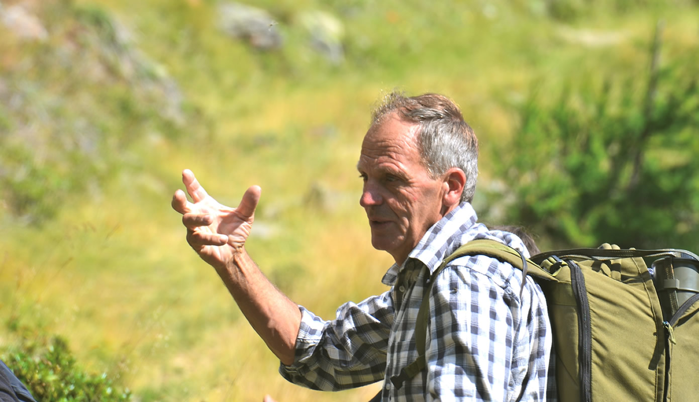
L'ESTATE ▸ SUI SENTIERI DEL PARCO
COL SOLE ⌾ DA GIUGNO ALLE CASTAGNE
Scarponi
alla porta
CASCATE DI SAÈNT E DI VALORZ, IL PONTE SOSPESO SUL RAGAIOLO, LE MALGHE, IL PERCORSO KNEIPP IN LOCALITÀ COLER: LA MONTAGNA COMINCIA DOVE FINISCE IL PRATO.
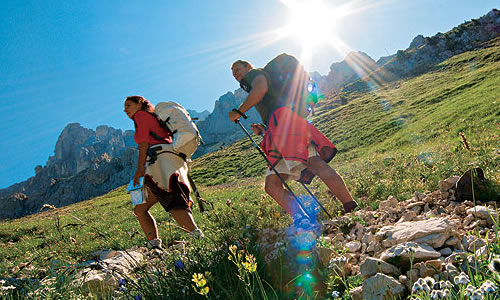
Escursioni
SENTIERI, MALGHE E RIFUGI DEL PARCO
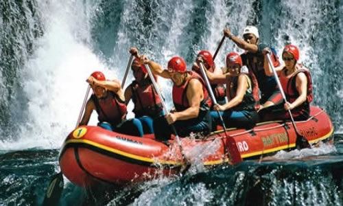
Rafting
SULLE ACQUE DELLA VAL DI SOLE
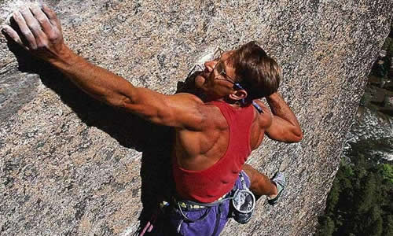
Climbing
PARETI E FALESIE
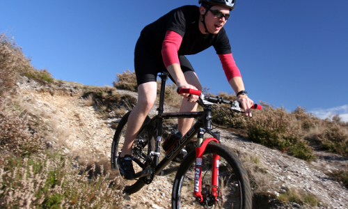
Mountain bike
SU DUE RUOTE, TRA I MASI
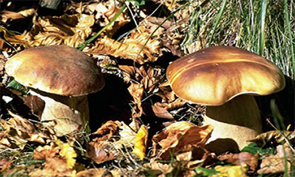
Funghi
LA RACCOLTA, IN STAGIONE
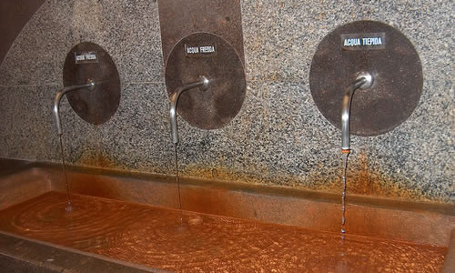
Le terme
LE ACQUE DI RABBI FONTI
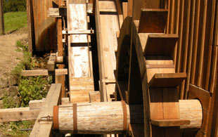
Molino Ruatti
TRADIZIONI DA RISCOPRIRE
CON LA NEVE ⌾ L'INVERNO DELLA VALLE
Quando
imbianca tutto
DA DAOLASA SI SALE VERSO L'AREA DI FOLGARIDA–MARILLEVA, COLLEGATA A MADONNA DI CAMPIGLIO; IN VALLE RESTANO I BOSCHI, LE CIASPOLE E IL FONDO.
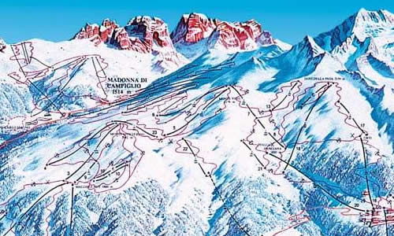
Sci alpino
FOLGARIDA–MARILLEVA, VERSO CAMPIGLIO
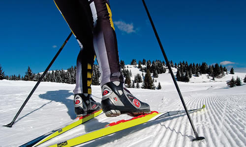
Sci di fondo
NEI PERCORSI SEGNALATI
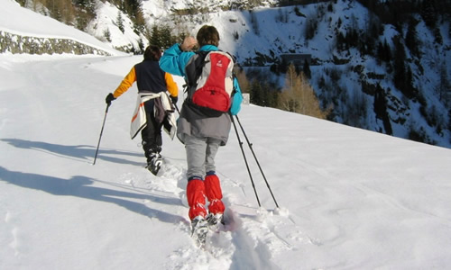
Ciaspole
NEI BOSCHI INNEVATI
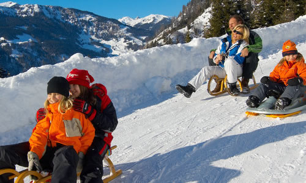
Slitte
LA DISCESA, DA BAMBINI ANCHE DA GRANDI
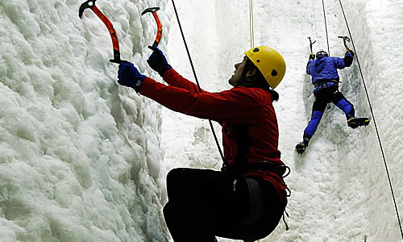
Ice climbing
LE CASCATE, DI GHIACCIO
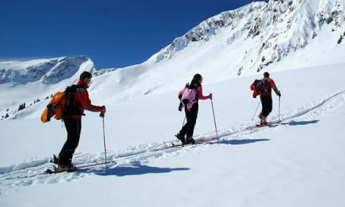
Sci alpinismo
SALENDO CON LE PELLI
LE TRADIZIONI ⌾ IL CALENDARIO DELLA VALLE
Le feste
di quassù
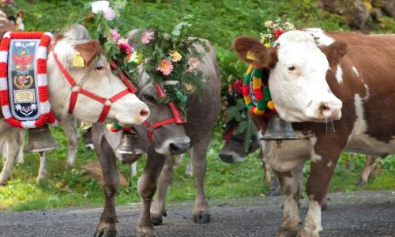
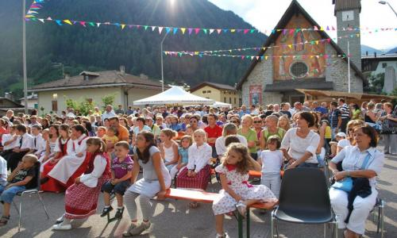
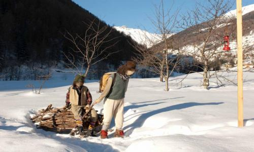
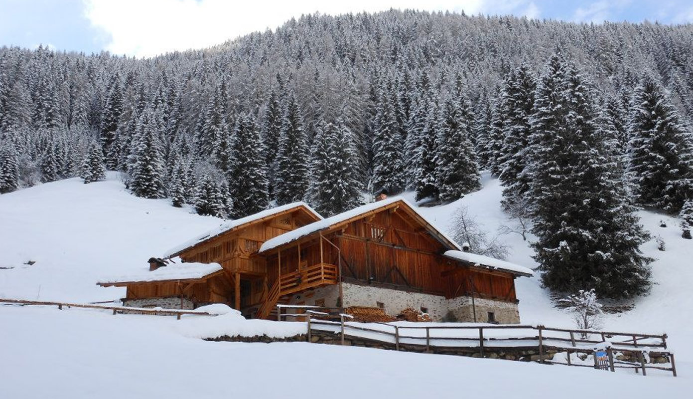
E poi il Carnevale, gli Zavarai, le Zicorie, i Sapori d'alta quota: il calendario della valle è pieno tutto l'anno. Al maso vi diciamo che cosa c'è nei giorni del vostro soggiorno.
LA BASE ⌾ IL MASO
La valle è grande.
La base è vostra
DORMITE DENTRO IL PARCO E DECIDETE OGNI MATTINA: CASCATE, MALGHE, TERME — O NIENTE DEL TUTTO.